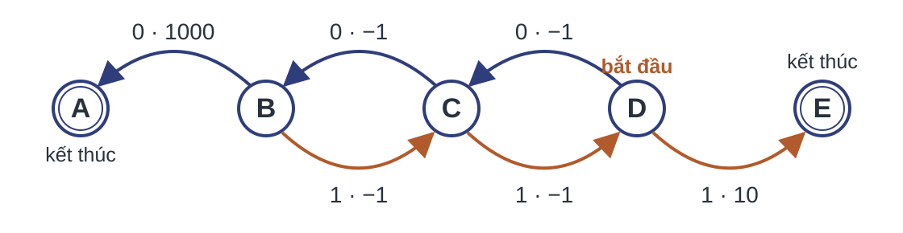
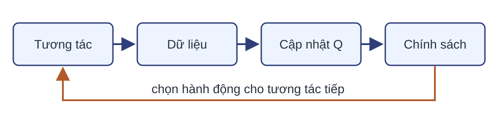
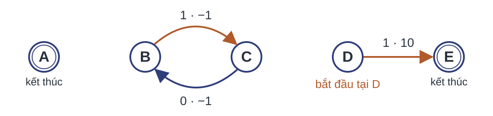
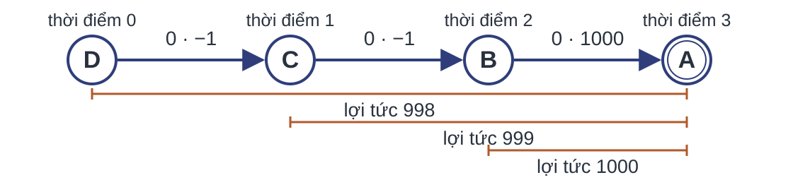
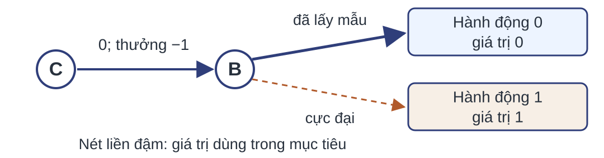
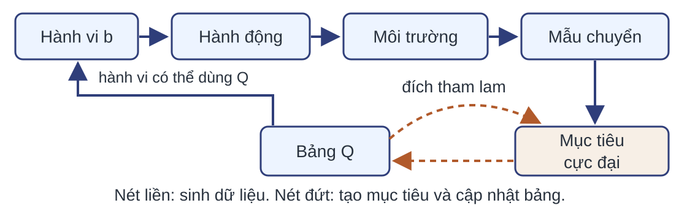
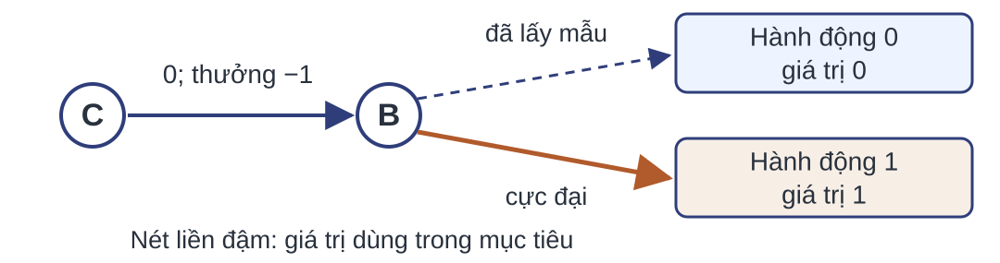

Điều khiển phi mô hình
Bài 06 · Học tăng cường
Monte Carlo (MC), Sarsa và Q-learning
Học kỳ 1 · 2026–2027
Tác giả bài giảng nguồn: Tạ Việt Cường
Ghi chú bài giảng và bài tập
Bài học xét điều khiển phi mô hình bằng bảng giá trị hành động hữu hạn. Monte Carlo, Sarsa và Q-learning dùng kinh nghiệm lấy mẫu để cập nhật bảng và điều chỉnh cách chọn hành động. Ba phương pháp khác nhau ở dữ liệu cần có và cách tạo mục tiêu cập nhật.
Một bảng sau hữu hạn mẫu cho phép chọn hành động hiện thời nhưng chưa tự bảo đảm chính sách tối ưu. Điều kiện để phát biểu bảo đảm là một phần của bài học.
Nguồn: Tạ Việt Cường, Điều khiển phi mô hình , tr. 1; Sutton và Barto, ấn bản 2, §§5.2–5.4, §§6.4–6.5.
Nội dung và mục tiêu
Bài toán điều khiển Giá trị hành động và thăm dò Điều khiển Monte Carlo Sarsa Q-learning Điều kiện bảo đảm Tổng hợp và vận dụng
Mục tiêu học tập
Thực hiện cập nhật giá trị hành động.
Giải thích sự khác biệt giữa các mục tiêu cập nhật.
Kiểm tra điều kiện sử dụng và bảo đảm.
Năng lực tính bao gồm lợi tức từ một lượt và từng bước cập nhật của ba thuật toán. Năng lực giải thích bao gồm vai trò của chính sách hành vi, chính sách đích và cách xử lý trạng thái kết thúc. Năng lực kiểm tra giả thiết bao gồm độ phủ dữ liệu, bước học và giới hạn tham lam.
Các bài tính dùng chung một môi trường. Loại dữ liệu, mục tiêu cập nhật và điều kiện bảo đảm là ba căn cứ để lựa chọn phương pháp.
Nguồn: Tạ Việt Cường, tr. 2, 9, 22, 25–30; Sutton và Barto, §§5.2–5.4, §§6.4–6.5.
Quyết định từ kinh nghiệm lấy mẫu

Nhãn cạnh: hành động · phần thưởng. Chuyển tất định; $\gamma=1$.
Học giá trị của hai hành động tại D từ các lượt hoặc chuyển tiếp đã quan sát.
Thưởng được nhận trên chuyển tiếp; giá trị tiếp nối tại A và E bằng $0$.
Tập trạng thái không kết thúc là $\mathcal S=\{B,C,D\}$; $\mathcal S^+=\{A,B,C,D,E\}$ bổ sung hai trạng thái kết thúc. Tại mỗi trạng thái thuộc $\mathcal S$, tập hành động là $\mathcal A(s)=\{0,1\}$. Hành động 0 đi sang trái, hành động 1 đi sang phải. Mỗi lượt bắt đầu tại D và kết thúc khi vào A hoặc E; sau đó không có hành động trong lượt ấy.
Mô hình được công bố để kiểm phép tính. Các thuật toán chỉ dùng mẫu tương tác và tập hành động hợp lệ, không dùng bảng chuyển để tính kỳ vọng. Độ dài ba bước thuộc các lượt minh họa; nó không biến C thành trạng thái kết thúc khi dữ liệu bị cắt.
Nguồn: Tạ Việt Cường, tr. 15; quy ước kết thúc được làm rõ từ môi trường của bài nguồn.
Từ dự đoán đến điều khiển
Dự đoán Chính sách đã cho
↓
Ước lượng giá trị từ mẫu
Điều khiển Kinh nghiệm tương tác
↓
Giá trị hành động → cải thiện chính sách
Tiên quyết: quá trình quyết định Markov (MDP), kỳ vọng và hàm giá trị.
Monte Carlo và sai phân thời gian (TD), với biến thể TD(0), cung cấp hai cách học từ mẫu.
Trong quá trình quyết định Markov (MDP), trạng thái hiện tại và hành động chứa thông tin cần thiết để xác định phân phối trạng thái kế tiếp và phần thưởng. Bài học xét trạng thái quan sát được và động lực không đổi theo thời gian.
Monte Carlo dự đoán dùng lợi tức sau một lượt hoàn chỉnh. TD(0) dự đoán dùng thưởng vừa nhận cùng ước lượng giá trị trạng thái tiếp. Khi chính sách cũng cần thay đổi, một giá trị trạng thái chưa đủ để phân biệt các hành động nếu không có mô hình chuyển. Bảng giá trị hành động cung cấp các đại lượng để so sánh ấy.
Nguồn: Tạ Việt Cường, tr. 3–6, 22; Sutton và Barto, §5.2, §6.2, tr. 124.
Thông tin có trong một mẫu
$\bigl(D,\;1,\;10,\;E\bigr)$
Câu hỏi:
Xác định trạng thái đầu, hành động, phần thưởng và trạng thái kế tiếp.
Xác định thông tin mẫu này cung cấp cho hành động trái ở D.
Xác định số hành động còn thực hiện trong lượt.
D là trạng thái đầu; hành động 1 đi phải; phần thưởng nhận được là 10; E là trạng thái kế tiếp và cũng là trạng thái kết thúc. Không còn hành động nào trong lượt.
Mẫu này không chứa một lần thực hiện hành động trái tại D hoặc lợi tức sau hành động ấy. Dữ kiện mô hình của bài tập có thể phục vụ suy luận riêng, nhưng không biến mẫu đi phải thành dữ liệu quan sát của hành động trái. Vì vậy việc so sánh hành động cần giữ các ước lượng riêng theo cặp trạng thái–hành động.
Nguồn: Câu hỏi xây dựng từ môi trường của Tạ Việt Cường, tr. 3, 15–16.
Giá trị của từng hành động
Bảng I: khởi tạo $Q_0$ Trạng thái 0: trái 1: phải B 0 1 C 1 0 D 0 1
Hai ước lượng tại D $Q(D,0)=0,\quad Q(D,1)=1$
Chọn hành động có giá trị lớn nhất trong bảng dẫn tới đi phải.
Các số khởi tạo chưa phải kết quả quan sát.
Một ô của $Q$ ứng với một cặp trạng thái–hành động.
Bảng có sáu ô cho ba trạng thái không kết thúc và hai hành động ở mỗi trạng thái. Trong biểu diễn bảng, cập nhật một cặp không trực tiếp thay đổi ước lượng của các cặp khác, dù các trạng thái có đặc điểm tương tự. $Q(D,0)=0$ chỉ là ước lượng khởi tạo, chưa xác định giá trị đúng của hành động trái. Một giá trị trạng thái không cho biết hành động nào tạo nên kết quả nếu thiếu mô hình để tính kỳ vọng từng hành động.
Xét riêng chính sách tiếp nối $\pi_L$ luôn đi trái tại B, C và D. Sau hành động đầu 0 ở D, quỹ đạo là D–C–B–A. Chính sách này được dùng để làm rõ đối tượng giá trị; nó khác chính sách tham lam của bảng I. Chính sách tham lam của bảng I tạo vòng B–C, còn từ D đi tới E.
Nguồn: Tạ Việt Cường, tr. 7, 15; Sutton và Barto, §5.2, tr. 96–97.
Giá trị đúng và bảng ước lượng
Với $s\in\mathcal S$, $a\in\mathcal A(s)$, lợi tức tới thời điểm kết thúc $T$ là
$G_t=\displaystyle\sum_{j=t}^{T-1}\gamma^{j-t}R_{j+1},\qquad G_T=0.$
$q_\pi(s,a)=\mathbb E_\pi[G_t\mid S_t=s,A_t=a].$
$a$ cố định hành động đầu; $\pi$ xác định các hành động sau.
Với $\pi_L$ luôn đi trái: $q_{\pi_L}(D,0)=998$, $q_{\pi_L}(D,1)=10$.
$Q$ là bảng ước lượng; $q_*$ là giá trị hành động tối ưu.
$t$ là thời điểm bắt đầu tính lợi tức, $0\le t<T$; $R_{j+1}$ là phần thưởng sau hành động tại thời điểm $j$. Tổng rỗng tại $T$ bằng 0. $T$ là thời điểm kết thúc thật của lượt, khác với ngân sách chạy thuật toán. Kỳ vọng trong $q_\pi$ gồm động lực môi trường và các hành động sau hành động đầu.
Với chính sách tiếp nối $\pi_L$ luôn đi trái, hành động đầu 0 tại D dẫn tới D–C–B–A, có lợi tức $-1-1+1000=998$. Hành động đầu 1 dẫn thẳng tới E, có lợi tức 10. Cả hai giá trị dùng cùng chính sách tiếp nối và đều hữu hạn. Chúng không thay bảng I.
Với $\gamma=1$, kỳ vọng giá trị cần lợi tức khả tích. Chính sách tham lam của bảng I có vòng B–C nhận thưởng −1 mãi; hành động trái từ D dưới chính sách tiếp nối ấy không có giá trị hữu hạn. Trong miền thưởng bị chặn và $0\le\gamma<1$, lợi tức chiết khấu hữu hạn. $q_*(s,a)$ là giá trị tốt nhất trong các chính sách tiếp nối hợp lệ của bài toán đang xét.
Nguồn: Tạ Việt Cường, tr. 4, 7, 15; Sutton và Barto, Chương 3 và §5.2, tr. 96–97.
Đánh giá và cải thiện từ dữ liệu

Hành động chưa được thử không nhận thêm dữ liệu từ vòng cập nhật.
Đánh giá cập nhật ước lượng giá trị từ dữ liệu. Cải thiện chính sách thay đổi cách chọn hành động theo ước lượng ấy. Vì chính sách sinh dữ liệu cho lần cập nhật sau, hai quá trình phụ thuộc nhau.
Nếu mọi lượt đều chọn phải ở D và kết thúc tại E, ô của hành động trái ở D không nhận thêm mẫu. Trong lặp chính sách lý tưởng, bước cải thiện dùng giá trị chính xác. Monte Carlo và TD thực hành cập nhật từ mẫu; sơ đồ phụ thuộc này không phải một chứng minh hội tụ. Nhu cầu thử các hành động khác dẫn tới chính sách có thăm dò.
Nguồn: Tạ Việt Cường, tr. 6, 10–11; Sutton và Barto, §4.6, tr. 86–87 và §5.3, tr. 97–99.
Phân bổ xác suất thăm dò
Tại D: $Q(D,0)=0$, $Q(D,1)=1$; dành $\varepsilon=\tfrac14$ cho thăm dò.
Khai thác Xác suất $\tfrac34$: chọn hành động cực đại $1$.
Thăm dò Xác suất $\tfrac14$: chọn đều trong hai hành động.
$\Pr(A=0\mid D)=\frac14\cdot\frac12=\frac18$
$\Pr(A=1\mid D)=\frac34+\frac14\cdot\frac12=\frac78$
Nhánh thăm dò chọn đều trong cả hai hành động, nên vẫn có thể chọn hành động đang đạt cực đại. Xác suất chọn phải là $3/4+1/8=7/8$, không chỉ là $3/4$. Tổng hai xác suất bằng 1.
Chính sách tham lam thuần túy từ bảng I không thử trái ở D. Thành phần thăm dò tạo xác suất dương cho hành động đó. Quy tắc xác suất lý thuyết dùng nguồn ngẫu nhiên đều độc lập; một dãy số ngắn cho trước trong bài tính chỉ mô tả thao tác cụ thể.
Nguồn: Tạ Việt Cường, tr. 7, 11, 17; Sutton và Barto, §5.4, tr. 100–101.
Chính sách $\varepsilon$-tham lam
Đặt $m(s)=|\mathcal A(s)|$ và $\mathcal G_Q(s)=\arg\max_a Q(s,a)$.
$$\pi_\varepsilon(a\mid s)=\frac{\varepsilon}{m(s)}+(1-\varepsilon)\frac{\mathbf1\{a\in\mathcal G_Q(s)\}}{|\mathcal G_Q(s)|}.$$
$0\le\varepsilon\le1$; phần khai thác chia đều giữa các hành động đồng hạng.
Chính sách $\varepsilon$-mềm thỏa $\pi(a\mid s)\ge\dfrac{\varepsilon}{m(s)}$ với mọi hành động.
Hai hành động đồng hạng nhận xác suất $\tfrac12$ mỗi hành động.
$\mathcal G_Q(s)$ là tập các hành động đạt giá trị lớn nhất trong hàng của trạng thái $s$, không nhất thiết có một phần tử. Tổng xác suất của phần chọn đều là $\varepsilon$; tổng của phần khai thác là $1-\varepsilon$; tổng toàn bộ bằng 1.
Chia đều phần khai thác giữa các cực đại là quy ước của bài; Sutton và Barto cho phép phá hòa tùy ý. Khi hai hành động đồng hạng, mỗi hành động nhận $\varepsilon/2+(1-\varepsilon)/2=1/2$. Mọi chính sách theo công thức đều là $\varepsilon$-mềm, nhưng một chính sách mềm bất kỳ không nhất thiết có dạng tham lam này.
Nguồn: Tạ Việt Cường, tr. 7, 11, 24; Sutton và Barto, tr. 100–101; quy ước đồng hạng được nêu tường minh.
Cải thiện với giá trị chính xác
MDP hữu hạn, có động lực không đổi theo thời gian; thưởng bị chặn; $0\le\gamma<1$.
Giữ cùng $0\le\varepsilon<1$. Cho $\pi$ là $\varepsilon$-mềm và biết chính xác $q_\pi$.
Nếu $\pi'$ là $\varepsilon$-tham lam theo $q_\pi$, thì $v_{\pi'}(s)\ge v_\pi(s)$ với mọi $s$.
$\displaystyle\sum_a\pi'(a\mid s)q_\pi(s,a)\ge v_\pi(s).$
Thay $q_\pi$ bằng $Q$ từ mẫu cần phân tích sai số riêng.
Một phép kiểm số tại một trạng thái: $q=(3,3,-1)$, $\varepsilon=0.3$, $\pi=(0.2,0.1,0.7)$ và $\pi'=(0.45,0.45,0.1)$. Hai kỳ vọng là $0.6+0.3-0.7=0.2$ và $1.35+1.35-0.1=2.6$. Đây là kiểm bất đẳng thức, không phải dữ liệu của chuỗi A–E.
Với $\varepsilon<1$, đặt $w_a=(\pi(a\mid s)-\varepsilon/m(s))/(1-\varepsilon)$. Các trọng số không âm và có tổng bằng 1. Vì $\max_aq_\pi(s,a)\ge\sum_aw_aq_\pi(s,a)$, cộng thành phần chọn đều cho bất đẳng thức $\sum_a\pi'(a\mid s)q_\pi(s,a)\ge v_\pi(s)$.
Vế trái là toán tử Bellman của $\pi'$ tác động lên $v_\pi$. Toán tử này bảo toàn thứ tự và là ánh xạ co khi $\gamma<1$. Lặp toán tử từ $v_\pi$ cho dãy không giảm hội tụ tới $v_{\pi'}$, nên $v_{\pi'}\ge v_\pi$.
Với $\varepsilon=1$, chính sách đều là duy nhất và có đẳng thức. Giữ $\varepsilon>0$ giới hạn lớp chính sách đang xét. Giá trị chính xác là giả thiết thiết yếu: mệnh đề này chưa bảo đảm từng cập nhật $Q$ bằng mẫu làm tăng giá trị thật.
Nguồn: Tạ Việt Cường, tr. 24; Sutton và Barto, §5.4, tr. 101–103.
Xác suất và đối tượng được ước lượng
Cho $Q(D,0)=0$, $Q(D,1)=1$ và $\varepsilon=\tfrac14$.
Câu hỏi:
Tính xác suất mỗi hành động. Tính lại khi hai ô cùng bằng $1$, với phần khai thác chia đều.
Giải thích hành động đầu và chính sách tiếp nối trong $q_\pi(D,0)$.
Xác định bảng khởi tạo đã đủ căn cứ để kết luận cải thiện chính sách hay chưa; nêu lý do.
Phân phối ban đầu là $(1/8,7/8)$. Khi đồng hạng, phân phối là $(1/2,1/2)$. Thành phần thăm dò cũng đóng góp xác suất cho hành động cực đại.
Trong $q_\pi(D,0)$, hành động đầu được cố định là 0; mọi hành động sau theo $\pi$. Bảng khởi tạo chưa được xác nhận bằng $q_\pi$ chính xác, nên chưa đủ căn cứ áp dụng mệnh đề cải thiện. Miền bảo đảm của mệnh đề dùng $\gamma<1$, trong khi chuỗi minh họa dùng $\gamma=1$. Học giá trị từ các lượt là cách bổ sung dữ liệu cho bảng ước lượng.
Nguồn: Câu hỏi từ Tạ Việt Cường, tr. 7, 15, 17, 24; Sutton và Barto, tr. 96–103.
Giá trị hành động từ lượt hoàn chỉnh
Lượt theo $\pi$ → lợi tức từ từng cặp → cập nhật $Q$ → chính sách lượt sau.
Lượt kết thúc thật; lợi tức khả tích; chính sách sinh lượt giữ cố định trong lượt.
Monte Carlo dự đoán gắn lợi tức với trạng thái. Điều khiển cần gắn lợi tức với cặp trạng thái–hành động để so sánh các hành động tại cùng một trạng thái. Lợi tức quan sát sau cặp là dữ liệu để ước lượng giá trị hành động của chính sách sinh phần còn lại của lượt.
Cùng một chính sách sinh hành động và xác định phần tiếp nối được đánh giá, nên quy trình này là theo chính sách. Giữ chính sách cố định trong lúc thu thập lượt vẫn cho phép thay chính sách sau lượt. Khi chính sách thay đổi giữa các lượt, những lợi tức tích lũy không tự có cùng kỳ vọng $q_\pi$ cố định.
Nguồn: Tạ Việt Cường, tr. 4, 9–11; Sutton và Barto, §§5.2–5.4, tr. 96–103.
Một cập nhật Monte Carlo

Từ D, hành động tham lam $1$ cho lượt D → E và lợi tức $10$.
$N(D,1):\ 0\to1$
$Q(D,1):\ 1\to10$
$1+\dfrac{10-1}{1}=10.$
Giá trị khởi tạo không được đếm như một mẫu quan sát.
Bảng I có hàng D bằng $(0,1)$. Chọn cực đại tạo lượt D–E, kết thúc sau một chuyển với thưởng 10. Lợi tức duy nhất là 10; với bộ đếm ban đầu bằng 0, trung bình một mẫu bằng 10. Mọi ô khác giữ nguyên và chính sách tham lam tại D vẫn đi phải.
Đồ thị chính sách còn có vòng B–C. Việc lượt bắt đầu D kết thúc không chứng minh mọi trạng thái dưới chính sách này đều dẫn tới kết thúc. Nếu lấy $(1+10)/2$, giá trị khởi tạo 1 đã bị tính thành một quan sát giả. Quy trình trong bài không dùng giả quan sát.
Nguồn: Tạ Việt Cường, tr. 15–16; Sutton và Barto, tr. 101; bộ đếm khởi tạo $N_0=0$.
Trung bình mẫu theo lần ghé đầu
Lần ghé đầu của cặp $(S_t,A_t)$: cặp này chưa xuất hiện ở thời điểm nhỏ hơn $t$ trong lượt.
$G_T=0,\qquad G_t=R_{t+1}+\gamma G_{t+1}.$
Với $t$ là lần ghé đầu của $(s,a)$:
$\begin{aligned}N(s,a)&\leftarrow N(s,a)+1,\\Q(s,a)&\leftarrow Q(s,a)+\frac{G_t-Q(s,a)}{N(s,a)}.\end{aligned}$
$N(s,a)$ đếm số lợi tức đã được dùng cho riêng cặp $(s,a)$.
Lợi tức được tính lùi từ trạng thái kết thúc. Lần ghé đầu vẫn được xác định theo chiều thời gian của quỹ đạo, không theo thứ tự gặp cặp trong vòng lặp ngược. Hai lần xuất hiện của cùng một trạng thái với hai hành động khác nhau thuộc hai cặp khác nhau.
Bộ đếm tăng trước phép chia. Khi $N_0=0$, mẫu đầu có trọng số 1. Sau $N$ mẫu được chọn, cập nhật với bước học $1/N$ cho trung bình số học của các lợi tức ấy. $N$ không phải số lượt toàn cục vì một cặp có thể vắng mặt trong nhiều lượt.
Nguồn: Tạ Việt Cường, tr. 10–11; Sutton và Barto, tr. 93, 101; Bài 10, hw3.pdf .
Lấy mẫu một lượt từ dãy số đã cho
Bảng II; $\varepsilon=\tfrac14$ Trạng thái 0: trái 1: phải B 0 1 C 1 0 D 1 0
$x_0=1$, $j=1,2,\ldots$
$x_j=(2x_{j-1}+1)\bmod5$
$u_j=(x_j+1)/5$
$\frac45,\ \frac35,\ \frac15,\ \frac25$
Đọc một số $u$: nếu $u>\tfrac14$, chọn hành động cực đại. Nếu $u\le\tfrac14$, đọc thêm một số: chọn $0$ khi số ấy $\le\tfrac12$; chọn $1$ trong trường hợp còn lại. Dãy số trạng thái đầu là $x_1=3$, $x_2=2$, $x_3=0$, $x_4=1$, cho bốn số $u$ lần lượt bằng $4/5,3/5,1/5,2/5$. Tại D, số $4/5$ chọn hành động cực đại 0. Tại C, số $3/5$ tiếp tục chọn 0. Tại B, số $1/5$ mở nhánh thăm dò và số phụ $2/5$ chọn 0. Lượt thu được là D–C–B–A.
Chỉ số $j$ đếm số tiêu thụ; nó khác thời điểm $t$ của môi trường vì thăm dò dùng hai số. Các hàng trong ví dụ đều có một cực đại. Khi cần chọn đều giữa nhiều cực đại, có thể chia miền của một số phụ thành các khoảng bằng nhau.
Quy ước tiêu thụ số làm đề có đáp án xác định. Dãy tất định ngắn này chỉ tái hiện thao tác; nó không tạo các mẫu đều độc lập và không chứng minh độ phủ dài hạn.
Nguồn: Tạ Việt Cường, tr. 17; bổ sung quy ước tiêu thụ số, đổi ký hiệu số sinh thành $u_j$ để phân biệt với phần thưởng.
MC: thu thập và tính lợi tức
Đầu vào: môi trường, tập hành động, phân phối đầu, $\gamma$, $Q_0$ hữu hạn, lịch $0<\varepsilon_k\le1$, $K$ lượt hoàn chỉnh.
Khởi tạo $Q\leftarrow Q_0$, $N\leftarrow0$, $k\leftarrow1$.
Đầu lượt: đặt lại quỹ đạo và chỉ số ghé đầu $f$; giữ $Q,N$. Lấy $S_0$; cố định $\pi_k$ là $\varepsilon_k$-tham lam theo $Q$.
Chọn hành động theo $\pi_k$ tới khi kết thúc; lưu quỹ đạo và $f(s,a)$. Tính lùi $G_t$ từ $G_T=0$. Mỗi lượt kết thúc gần chắc chắn và có lợi tức khả tích. Đầu ra: $Q$ và chính sách mềm từ $Q$.
$K$ là số nguyên dương. Trạng thái đầu được lấy theo phân phối đầu đã cho. Trong mỗi lượt, đặt $t=0$ rồi lặp: lấy $A_t$ theo $\pi_k$, thực hiện hành động, nhận $R_{t+1}$ và $S_{t+1}$, lưu chuyển. Nếu cặp $(S_t,A_t)$ chưa có trong ánh xạ $f$ của lượt, đặt $f(S_t,A_t)=t$. Sau đó tăng $t$. Dừng thu thập khi vào trạng thái kết thúc, đặt thời điểm ấy bằng $T$.
Bảng $Q$ giữ nguyên trong lúc thu thập và tính lợi tức, nên $\pi_k$ không đổi giữa lượt. $f$ chỉ chứa chỉ số của lượt hiện tại; $Q$ và $N$ tích lũy qua các lượt. Tính lùi $G_t=R_{t+1}+\gamma G_{t+1}$ vẫn dùng chỉ số ghé đầu đã lưu theo chiều thuận.
Biết tập hành động không có nghĩa biết xác suất chuyển của môi trường. Một tiền tố bị cắt trước kết thúc chưa cung cấp lượt hoàn chỉnh cho quy trình này. Bước cập nhật dùng các lợi tức vừa tính và các chỉ số trong $f$.
Nguồn: Tạ Việt Cường, tr. 10–11; Sutton và Barto, tr. 101; đặc tả bộ đếm, ngân sách và lần ghé đầu được bổ sung.
MC: cập nhật và cải thiện chính sách
Với mỗi cặp xuất hiện trong lượt, dùng $t=f(s,a)$; tăng $N(s,a)$ rồi cập nhật $Q(s,a)$ bằng $G_t$.
Tạo chính sách $\varepsilon_k$-tham lam từ bảng $Q$ mới.
Nếu $k<K$, tăng $k$ và bắt đầu lượt mới. Nếu $k=K$, trả $Q$ cùng chính sách vừa tạo. $Q(s,a)\leftarrow Q(s,a)+\frac{G_{f(s,a)}-Q(s,a)}{N(s,a)}.$
Đặt $M=\sum_s|\mathcal A(s)|$. Bộ nhớ: $O(M+T)$.
Tính lợi tức và xử lý lần ghé đầu: $O(T)$ mỗi lượt.
Mỗi cặp đóng góp đúng một lợi tức của lần ghé đầu trong lượt, dù cặp xuất hiện nhiều lần. $N$ đã tăng trước khi dùng trong mẫu số. Sang lượt tiếp theo, quỹ đạo và $f$ được đặt lại; $Q$ và $N$ được giữ. Chính sách mới không thay chính sách đã sinh lượt vừa hoàn tất.
$M$ là tổng số cặp hợp lệ; $T$ là độ dài lượt hiện tại. Lưu chỉ số ghé đầu giúp xử lý mỗi chuyển một số lần hữu hạn, cho chi phí $O(T)$ đối với lợi tức và việc chọn mẫu. Kiểm lại toàn bộ tiền tố ở mỗi vị trí có thể tốn $O(T^2)$. Chi phí chọn hoặc cải thiện chính sách còn gồm việc tìm cực đại trong các hành động của trạng thái liên quan.
$K$ là ngân sách lượt hoàn chỉnh, không phải tiêu chuẩn hội tụ. Ở lượt mới, lịch có thể dùng $\varepsilon_{k+1}$ và tạo chính sách mới từ $Q$ giữ lại. Trung bình Monte Carlo với một chính sách cố định không tự chứng minh hội tụ cho điều khiển đang thay đổi chính sách.
Nguồn: Tạ Việt Cường, tr. 10–11; Sutton và Barto, tr. 99–103. Chi phí suy từ quy trình lưu bảng và quỹ đạo.
Cập nhật từ lượt D–C–B–A

Sau cập nhật từ bảng II Trạng thái 0: trái 1: phải B 1000 1 C 999 0 D 998 0
$N(B,0)=N(C,0)=N(D,0)=1$.
Các ô phải giữ nguyên; bộ đếm của chúng vẫn bằng $0$.
Ba lợi tức là $G_2=1000$, $G_1=-1+1000=999$ và $G_0=-1+999=998$. Mỗi cặp xuất hiện một lần. Với $N_0=0$, mẫu đầu thay trực tiếp giá trị khởi tạo của ba ô trái bằng các lợi tức tương ứng.
Lần ghé đầu và mọi lần ghé cho cùng kết quả trên lượt này vì không có cặp lặp. Lợi tức 998 của một lượt đã cho không tự là $q_\pi(D,0)$ của chính sách tham lam bảng I. Việc chính sách mềm ưu tiên trái sau cập nhật cũng chưa chứng nhận giá trị thật tăng sau mỗi mẫu; mệnh đề cải thiện trước đó dùng $q_\pi$ chính xác.
Nguồn: Tạ Việt Cường, tr. 15, 17; Bài 7, hw07-function-approximation.pdf ; lời giải tính từ dữ kiện đã cho.
Lần ghé đầu của cặp
$D\to C\to D\to C\to B\to A$
Hành động: $0,1,0,0,0$. Phần thưởng: $-1,-1,-1,-1,1000$.
$\gamma=1$ và $N_0(D,0)=0$.
Câu hỏi:
Tính $Q(D,0)$ và $N(D,0)$ sau Monte Carlo lần ghé đầu.
Tính lại nếu dùng mọi lần ghé và trung bình mẫu.
Cặp $(D,0)$ xuất hiện ở $t=0$ và $t=2$. Các lợi tức theo thời gian là $996,997,998,999,1000$. Vì vậy hai lợi tức ứng với $(D,0)$ là 996 và 998.
Lần ghé đầu chỉ lấy mẫu 996: $Q(D,0)=996$, $N(D,0)=1$. Mọi lần ghé lấy cả hai mẫu: $Q(D,0)=(996+998)/2=997$, $N(D,0)=2$. Giá trị khởi tạo không tính như một mẫu.
Hai lần xuất hiện của C dùng hai hành động khác nhau. Cặp $(C,0)$ vẫn có lần ghé đầu dù trước đó đã ghé $(C,1)$. Các lợi tức trên cần toàn bộ phần cuối của lượt; một tiền tố chưa đủ để thực hiện các cập nhật Monte Carlo này.
Nguồn: Câu hỏi xây dựng từ môi trường của Tạ Việt Cường, tr. 15; quy tắc lần ghé đầu theo Sutton và Barto, tr. 101.
Cập nhật khi lượt chưa kết thúc
$D\xrightarrow{\;0,\;-1\;}C\;\longrightarrow\cdots$
Lợi tức hoàn chỉnh của lượt chưa được quan sát.
Thông tin đã nhận Phần thưởng của chuyển vừa xảy ra.
Ước lượng tiếp nối Giá trị của hành động sẽ thực hiện tại C.
Sarsa dùng hành động kế tiếp đã lấy mẫu để tạo mục tiêu một bước.
Monte Carlo phải có phần cuối của lượt để tính lợi tức hoàn chỉnh. TD(0) dự đoán đã dùng giá trị ước lượng của trạng thái tiếp để cập nhật sớm. Khi học giá trị hành động theo chính sách, phần tiếp nối cần cả trạng thái và hành động sẽ thực hiện ở đó.
Trong tiền tố D–C, C chưa kết thúc. Giá trị tiếp nối có thể khác 0 dù dữ liệu hiện có dừng ở C. Ước lượng ấy có thể sai; khả năng cập nhật trước khi hết lượt không tự bảo đảm hiệu quả mẫu tốt hơn trên mọi bài toán.
Nguồn: Tạ Việt Cường, tr. 5, 9, 12; Sutton và Barto, §6.2, tr. 124 và §6.4, tr. 129.
Dữ liệu chung cho cập nhật một bước
$\gamma=1$, $\alpha=0.8$. Hai thuật toán chạy trên hai bản sao riêng của $Q_0$.
Bảng I: khởi tạo $Q_0$ Trạng thái 0: trái 1: phải B 0 1 C 1 0 D 0 1
Mẫu $S$ $A$ $R$ $S^{\prime}$ $A^{\prime}$ 1 D 0 −1 C 0 2 C 0 −1 B 0 3 B 0 1000 A không có 4 D 1 10 E không có 5 D 0 −1 C 0
Khởi động lại D sau A và E. Mẫu cuối dừng ở C, khi lượt chưa kết thúc.
Các mẫu thuộc ba lượt: D–C–B–A, D–E và tiền tố D–C. Trạng thái đầu được đặt lại về D sau mỗi kết thúc thật tại A hoặc E. Ký hiệu $S'=S_{t+1}$, $A'=A_{t+1}$ và $R=R_{t+1}$ rút gọn tên cột. Cột $A'$ dùng khi tính Sarsa.
Các hành động được cho trước để đối chiếu có điều kiện trên dữ liệu. Chúng có xác suất dương dưới hành vi $\varepsilon$-tham lam với $\varepsilon=1/4$ của từng thuật toán; đây không phải quỹ đạo duy nhất suy ra từ $\varepsilon$ hay dãy số của bài Monte Carlo. Hành động $A'=0$ ở mẫu cuối đã lấy trước cập nhật dù ngân sách dừng trước khi thực hiện nó.
Từng thuật toán bắt đầu từ bảng I và cập nhật tại chỗ trên bản sao riêng. Giá trị mới của một mẫu được dùng cho các mẫu sau trong cùng bản chạy.
Nguồn: Hoàn thiện dữ kiện bài tính của Tạ Việt Cường, tr. 18, 21; môi trường tr. 15; quỹ đạo D–C–B–A cũng có trong Bài 7, hw07-function-approximation.pdf .
Hai bước tính Sarsa
Mẫu 1: $Q(D,0)=0$, mục tiêu $-1+1=0$; giá trị mới vẫn bằng $0$.

$\underbrace{Y=-1+0=-1}_{\text{mục tiêu}},\qquad\underbrace{\delta=-1-1=-2}_{\text{sai lệch}}.$
$Q_{\text{mới}}(C,0)=1+0.8(-2)=-0.6.$
Sau mẫu thứ nhất, bảng vẫn bằng bảng I. Tại mẫu thứ hai, ô hiện tại $Q(C,0)=1$. Trạng thái kế tiếp là B; hành động kế tiếp đã lấy mẫu là 0, nên giá trị tiếp nối là $Q(B,0)=0$. Sarsa dùng mục tiêu $-1+0=-1$, sai lệch $-1-1=-2$ và cập nhật thành $-3/5=-0.6$.
Hành động 1 tại B có giá trị 1 nhưng không được dùng trong mục tiêu này. Thay 0 bằng 1 sẽ thay cơ chế tạo mục tiêu. Mọi giá trị bên phải lấy từ bảng trước cập nhật thứ hai; chỉ ô $(C,0)$ đổi, các ô khác giữ nguyên.
Nguồn: Tạ Việt Cường, tr. 13, 18; Sutton và Barto, tr. 129; phép tính từ năm mẫu đã cho.
Mục tiêu Sarsa
$Q_t$ là bảng trước cập nhật. Nếu $S_{t+1}$ chưa kết thúc, lấy $A_{t+1}$ theo chính sách từ $Q_t$.
$$Y_t=\begin{cases}R_{t+1}+\gamma Q_t(S_{t+1},A_{t+1}),&S_{t+1}\in\mathcal S,\\R_{t+1},&S_{t+1}\text{ kết thúc}.\end{cases}$$
$\begin{aligned}\delta_t&=Y_t-Q_t(S_t,A_t),\\Q_{t+1}(S_t,A_t)&=Q_t(S_t,A_t)+\alpha_t\delta_t.\end{aligned}$
Các ô khác giữ nguyên. Chính sách sinh hành động cũng xác định giá trị tiếp nối.
Tên Sarsa gắn với bộ năm $(S_t,A_t,R_{t+1},S_{t+1},A_{t+1})$. $A_t$ đã được chọn trước bước cập nhật đang xét. Nếu chưa kết thúc, $A_{t+1}$ được lấy theo chính sách từ $Q_t$ trước khi cập nhật, rồi chính hành động đó sẽ được thực hiện nếu tiếp tục tương tác.
Nếu $S_{t+1}$ kết thúc, không chọn $A_{t+1}$ và mục tiêu chỉ có phần thưởng. $\delta_t$ so sánh mục tiêu lấy mẫu với ước lượng hiện tại; nó chưa phải sai số thật so với $q_\pi$. Với mẫu C–B đã tính, $Y_t=-1$ và $\delta_t=-2$.
Sarsa là phương pháp theo chính sách: quy tắc chọn hành động được dùng cả trong tương tác lẫn trong ước lượng phần tiếp nối.
Nguồn: Tạ Việt Cường, tr. 12–14; Sutton và Barto, §6.4, tr. 129–130.
Sarsa: khởi tạo và bước không kết thúc
Đầu vào: môi trường, tập hành động, phân phối đầu, $\gamma$, $Q_0$, lịch bước học/thăm dò, ngân sách cập nhật.
Đặt $Q\leftarrow Q_0$, các bộ đếm bằng $0$. Lấy $S_0$ từ phân phối đầu, chọn $A_0$ theo chính sách mềm.
Chọn bước học cho cặp $(S,A)$ từ thông tin hiện có. Thực hiện $A$; nhận $R,S'$.
Nếu $S'$ chưa kết thúc: lấy $A'$ từ $Q$ hiện có, tính $Y$, cập nhật một ô và tăng bộ đếm. Nếu tiếp tục, dùng $(S,A)\leftarrow(S',A')$. Đầu ra: $Q$ và chính sách $\varepsilon$-tham lam hiện hành. Hành động $A'$ được giữ để thực hiện.
Khởi tạo bảng bằng $Q\leftarrow Q_0$; các bộ đếm cập nhật theo cặp và bộ đếm ngân sách bắt đầu ở 0. Với cặp đã cập nhật $n$ lần, chọn bước học cho lần $n+1$ trước khi nhận mẫu, rồi tăng bộ đếm sau cập nhật. Cách này tránh chia cho 0 khi dùng lịch $1/(n+1)$ và giữ bước học phụ thuộc thông tin có trước mẫu.
Bước học có thể bằng 0.8 trong bài tính. Các lịch theo số cập nhật riêng cần được phân biệt với lịch theo tổng số tương tác. Trạng thái đầu lấy theo phân phối đầu; hành động đầu lấy từ chính sách mềm của bảng hiện có.
$A'$ chỉ được lấy một lần, trước cập nhật. Lấy lại theo bảng mới có thể làm hành động thực hiện khác hành động đã dùng trong mục tiêu. Ở bước cuối chưa kết thúc, vẫn phải lấy $A'$ để tính mục tiêu; nếu ngân sách đã hết sau cập nhật, hành động ấy không cần được thực hiện. Nhánh chuyển vào trạng thái kết thúc được xử lý riêng.
Nguồn: Tạ Việt Cường, tr. 14; Sutton và Barto, tr. 129–130; bổ sung đặc tả bộ đếm và ngân sách.
Sarsa: kết thúc và ngân sách chạy
Nếu $S'$ kết thúc: đặt $Y=R$, cập nhật $Q$ và tăng bộ đếm; không chọn $A'$.
Nếu $S'$ kết thúc và còn ngân sách, bắt đầu lượt mới theo phân phối đầu; lấy hành động từ bảng hiện có.
Nếu hết ngân sách sau cập nhật, trả $Q$ và chính sách hiện hành. Dừng lấy mẫu ở trạng thái chưa kết thúc vẫn giữ giá trị tiếp nối trong mục tiêu cuối.
Bộ nhớ bảng: $O(M)$. Mục tiêu dùng một lần tra cứu giá trị khi đã có $A'$.
Kết thúc lượt là một sự kiện của môi trường; hết ngân sách là quyết định dừng thuật toán. Nếu chuyển vào A hoặc E, mục tiêu chỉ có thưởng và không có hành động tiếp theo trong lượt. Nếu $S'$ kết thúc và còn ngân sách, lấy trạng thái đầu mới rồi lấy hành động theo bảng hiện hành; bảng và các bộ đếm được giữ.
Nếu dữ liệu dừng ở C chưa kết thúc, mục tiêu vẫn có giá trị tiếp nối đã xác định bằng $A'$. Ngân sách kết thúc sau cập nhật, không xóa phần tiếp nối. Dừng theo ngân sách chỉ trả ước lượng hiện tại, không chứng minh hội tụ.
$M$ là số cặp trạng thái–hành động hợp lệ. Lưu bảng và bộ đếm tốn $O(M)$; không cần lưu toàn bộ lượt. Khi đã có $A'$, mục tiêu dùng một giá trị bảng. Tuy nhiên, lấy hành động $\varepsilon$-tham lam có thể phải duyệt $m(S')$ hành động để tìm cực đại.
Nguồn: Tạ Việt Cường, tr. 14, 18; Sutton và Barto, tr. 129; chi phí suy từ biểu diễn bảng.
Cập nhật khi chuyển vào trạng thái kết thúc
Mẫu 3: B → A, hành động 0 $0+0.8(1000-0)=800.$
Mẫu 4: D → E, hành động 1 $1+0.8(10-1)=8.2.$
Bảng Sarsa trước mẫu 5 Trạng thái 0: trái 1: phải B 800 1 C −0.6 0 D 0 8.2
Phần thưởng cuối đã được nhận trên chuyển; giá trị tiếp nối tại A và E bằng $0$.
Mẫu thứ ba cập nhật ô $(B,0)$ của trạng thái hiện tại B; A chỉ là trạng thái kế tiếp. Mục tiêu là 1000, nên từ giá trị cũ 0, bước học 0.8 cho 800. Sau kết thúc tại A, lượt mới bắt đầu ở D nhưng giữ bảng $Q$.
Mẫu thứ tư cập nhật ô $(D,1)$ với mục tiêu 10. Giá trị mới là $1+0.8(10-1)=41/5=8.2$. Không có $A'$ tại A hoặc E; không cộng thêm 1000 hoặc 10 như một giá trị tiếp nối. Ô $(C,0)$ vẫn bằng $-3/5=-0.6$ từ mẫu thứ hai vì chưa được cập nhật lại.
Nguồn: Lời giải trên dữ kiện hoàn thiện bài nguồn Tạ Việt Cường, tr. 18; quy tắc Sarsa theo Sutton và Barto, tr. 129.
Cập nhật Sarsa từ tiền tố
Sau bốn cập nhật: $Q(D,0)=0$, $Q(C,0)=-0.6$.
$(D,0,-1,C,0),\qquad\gamma=1,\quad\alpha=0.8.$
Câu hỏi:
Tính mục tiêu $Y$, sai lệch $\delta$ và $Q_{\text{mới}}(D,0)$.
Xác định thời điểm lấy $A'$ và giải thích việc giữ hay lấy lại hành động ấy sau cập nhật.
Giải thích ảnh hưởng của việc hết ngân sách tới giá trị tiếp nối tại C.
$Y=-1+(-0.6)=-1.6$, $\delta=-1.6-0=-1.6$ và $Q_{\text{mới}}(D,0)=0+0.8(-1.6)=-1.28=-32/25$. Phép tính dùng giá trị tại C sau các cập nhật trước, không dùng lại giá trị khởi tạo bằng 1.
$A'=0$ đã được lấy trước cập nhật để xác định mục tiêu. Nếu tiếp tục tương tác, phải thực hiện chính hành động đó; lấy lại theo bảng mới có thể làm thay đổi hành động. Khi hết ngân sách, hành động đã chọn không cần được thực hiện.
C vẫn là trạng thái chưa kết thúc nên giá trị tiếp nối không bị đặt thành 0. Monte Carlo chưa có lợi tức hoàn chỉnh cho lượt thứ ba; Sarsa có đủ dữ kiện cho một mục tiêu một bước. Mục tiêu này phụ thuộc hành động mà chính sách còn thăm dò đã chọn.
Nguồn: Câu hỏi trên năm mẫu đã cho, hoàn thiện Tạ Việt Cường, tr. 18; Sutton và Barto, tr. 129–130.
Chính sách hành vi và chính sách đích
Hành vi $b$ sinh dữ liệu; đích $\pi$ xác định giá trị được học.

Q-learning dùng đích tham lam trong khi hành vi vẫn có thể thăm dò.
Sarsa đã dùng giá trị của hành động trái được lấy mẫu tại B, dù hành động phải có giá trị bảng lớn hơn. Q-learning thay phần tiếp nối trong mục tiêu bằng giá trị cực đại của hàng B, đồng thời vẫn cho phép hành vi chọn trái để lấy dữ liệu.
Phân biệt theo chính sách và khác chính sách dựa vào hai vai trò: chính sách sinh dữ liệu và chính sách xác định giá trị được học. Nó không dựa vào việc hai phân phối gần nhau nhiều hay ít. Tính cực đại trên bảng không cần mô hình chuyển. Q-learning tính trực tiếp cực đại qua các hành động, không lấy một hành động đích để ước lượng giá trị tiếp nối.
Nguồn: Tạ Việt Cường, tr. 8, 19–20; Sutton và Barto, tr. 103–105, 131.
Một mục tiêu cực đại
Q-learning bắt đầu lại từ bảng I. Mẫu 1 vẫn cho $Q(D,0)=0$.

$Y=-1+\max(0,1)=0;\qquad Y_{\text{Sarsa}}=-1.$
$Q_{\text{mới}}(C,0)=1+0.8(0-1)=0.2.$
Q-learning chạy trên một bản sao riêng của bảng I, không lấy giá trị $Q(C,0)=-0.6$ sau Sarsa làm khởi tạo. Sau mẫu thứ nhất, cả hai bản vẫn bằng bảng I. Tại mẫu thứ hai, hàng B bằng $(0,1)$; giá trị tiếp nối cực đại bằng 1, cho mục tiêu $-1+1=0$.
Từ $Q(C,0)=1$, cập nhật cho $1+0.8(0-1)=1/5=0.2$. Hai thuật toán khác nhau ở cách chọn giá trị tiếp nối, dù dùng cùng mẫu chuyển và cùng bảng trước bước này.
Hành động thực tế tiếp theo trong dữ liệu vẫn là 0; Q-learning không thay nó bằng 1 trong quỹ đạo. Cực đại của bảng ước lượng cũng chưa phải giá trị hành động tốt nhất thật của môi trường.
Nguồn: Tạ Việt Cường, tr. 20–21; Sutton và Barto, tr. 131; khởi tạo Q-learning được thống nhất về bảng I để đối chiếu mục tiêu.
Quy tắc Q-learning
Dữ liệu: $(S_t,A_t,R_{t+1},S_{t+1})$; $Q_t$ là bảng trước cập nhật.
$$Y_t=\begin{cases}R_{t+1}+\gamma\displaystyle\max_{a\in\mathcal A(S_{t+1})}Q_t(S_{t+1},a),&S_{t+1}\in\mathcal S,\\R_{t+1},&S_{t+1}\text{ kết thúc}.\end{cases}$$
$Q_{t+1}(S_t,A_t)=Q_t(S_t,A_t)+\alpha_t\bigl[Y_t-Q_t(S_t,A_t)\bigr].$
Các ô khác giữ nguyên. Mục tiêu không cần hành động kế tiếp được lấy mẫu.
Tất cả giá trị ở vế phải được lấy từ $Q_t$ trước cập nhật. Tập $\mathcal A(S_{t+1})$ gồm các hành động hợp lệ tại trạng thái kế tiếp. Việc biết tập này là giả thiết của biểu diễn bảng, không phải biết mô hình chuyển.
Ở trạng thái kết thúc không có hành động tiếp theo, nên mục tiêu được định nghĩa riêng bằng phần thưởng. Với chuyển C–B và hàng B bằng $(0,1)$, mục tiêu bằng 0 và giá trị mới của $(C,0)$ bằng 0.2 như phép tính đã có.
Q-learning hướng tới $q_*$ dưới điều kiện phù hợp về môi trường, độ phủ và bước học. Một bảng sau hữu hạn mẫu chưa tự bằng $q_*$. Hành động do chính sách hành vi chọn không được đưa vào phép cực đại của mục tiêu.
Nguồn: Tạ Việt Cường, tr. 20; Sutton và Barto, §6.5, tr. 131.
Q-learning: lấy mẫu và cập nhật
Đầu vào: môi trường, tập hành động, phân phối đầu, $\gamma$, $Q_0$, hành vi $b$, lịch bước học, ngân sách cập nhật.
Đặt $Q\leftarrow Q_0$, các bộ đếm bằng $0$; lấy trạng thái đầu $S$.
Lấy $A$ theo $b$, chọn bước học cho cặp $(S,A)$, thực hiện $A$ và nhận $R,S'$.
Nếu $S'$ chưa kết thúc: tính cực đại trên hàng $S'$, tạo $Y$, cập nhật một ô và tăng bộ đếm. Nếu tiếp tục, gán $S\leftarrow S'$ rồi lấy hành động mới theo $b$. Đầu ra: $Q$ và chính sách tham lam từ $Q$.
Bước học cho lần cập nhật tiếp theo của cặp được chọn từ thông tin có trước mẫu. Nếu cặp đã cập nhật $n$ lần, lịch theo cặp dùng chỉ số $n+1$, sau đó tăng bộ đếm khi đã cập nhật. Bộ đếm ngân sách tăng sau mỗi chuyển được dùng.
Hành vi $b$ có thể là $\varepsilon$-tham lam theo bảng hiện hành. Khác với Sarsa, hành động cho lần tương tác sau được lấy sau cập nhật, vì nó không phải đầu vào của mục tiêu hiện tại. Q-learning chỉ cần cực đại của hàng trạng thái kế tiếp.
Khi chạy tự do, hai thuật toán có thể tạo ra các quỹ đạo khác nhau. Dữ liệu chung trong bài chỉ phục vụ đối chiếu có điều kiện trên những mẫu đã cho. Nhánh chuyển vào trạng thái kết thúc và ngân sách dừng hoàn tất quy trình.
Nguồn: Sutton và Barto, tr. 131; giả mã bổ sung để hoàn thiện công thức ở Tạ Việt Cường, tr. 20.
Q-learning: kết thúc và chi phí
Nếu $S'$ kết thúc: đặt $Y=R$, cập nhật $Q$ và tăng bộ đếm.
Nếu $S'$ kết thúc và còn ngân sách, bắt đầu lượt mới theo phân phối đầu. Nếu hết ngân sách, trả $Q$ và chính sách tham lam.
Nếu dừng ở trạng thái chưa kết thúc, mục tiêu của bước cuối vẫn chứa cực đại. Bộ nhớ $O(M)$ cho bảng và bộ đếm.
Tính mục tiêu Tìm cực đại trực tiếp: $O(m(S'))$.
Trạng thái kết thúc không có hàng hành động dùng trong phép cực đại. Phần thưởng cuối xuất hiện một lần trong mục tiêu. Sau mỗi kết thúc thật, chỉ trạng thái đầu lượt được đặt lại; bảng và bộ đếm được giữ nếu còn ngân sách.
Ở trạng thái chưa kết thúc, dừng lấy dữ liệu không loại bỏ phần tiếp nối của mục tiêu cuối. Ngân sách hữu hạn chưa là tiêu chuẩn hội tụ.
$M=\sum_s|\mathcal A(s)|$ và $m(S')=|\mathcal A(S')|$. Tìm cực đại trực tiếp trong bảng tốn $O(m(S'))$; chọn hành vi $\varepsilon$-tham lam cũng có thể cần duyệt hành động. Do đó không thể kết luận toàn bộ Sarsa luôn có chi phí hằng hoặc Q-learning luôn chậm hơn chỉ từ chi phí của một phép tra cứu. Bài học dùng biểu diễn bảng trực tiếp.
Nguồn: Sutton và Barto, tr. 131; Tạ Việt Cường, tr. 20–21. Chi phí suy từ biểu diễn bảng.
Hai bảng từ cùng năm mẫu
Giá trị mới của ô được cập nhật Mẫu Ô cập nhật Sarsa Q-learning 1 $(D,0)$ 0 0 2 $(C,0)$ −0.6 0.2 3 $(B,0)$ 800 800 4 $(D,1)$ 8.2 8.2 5 $(D,0)$ −1.28 −0.64
$Y_5^{\text{Q-learning}}=-1+\max(0.2,0)=-0.8.$
Mẫu 2 dùng giá trị tiếp nối tại B; mẫu 5 truyền khác biệt tại C về D.
Mỗi cột bắt đầu từ bản sao riêng của bảng I và dùng các kết quả trước đó trong chính cột ấy. Với Q-learning ở mẫu thứ năm, $Q(C,0)=0.2$, $Q(C,1)=0$ và giá trị cũ $Q(D,0)=0$. Mục tiêu bằng $-0.8$, nên giá trị mới bằng $0+0.8(-0.8)=-0.64=-16/25$.
Bảng cuối Sarsa: B bằng $(800,1)$, C bằng $(-0.6,0)$, D bằng $(-1.28,8.2)$. Bảng cuối Q-learning: B bằng $(800,1)$, C bằng $(0.2,0)$, D bằng $(-0.64,8.2)$. Các số chính xác khác nhau là $-3/5$, $1/5$, $-32/25$ và $-16/25$; $8.2=41/5$.
Khác biệt bắt đầu ở cách dùng hàng B trong mục tiêu cho $(C,0)$, rồi giá trị hàng C được dùng để cập nhật $(D,0)$. Hai bảng hữu hạn mẫu chưa xếp hạng hiệu quả của thuật toán. Lượt thứ ba chưa kết thúc nên chưa đủ lợi tức cho Monte Carlo.
Nguồn: Lời giải hoàn thiện Tạ Việt Cường, tr. 18, 21; các quy tắc theo Sutton và Barto, tr. 129–131.
Điều kiện sử dụng dữ liệu hành vi
Mẫu đúng MDP; hành vi phủ các cặp cần học; mục tiêu Q-learning dùng cực đại từ bảng hiện hành.
Tập dữ liệu hữu hạn không tự cung cấp bảo đảm hội tụ của quá trình lấy mẫu vô hạn.
Trong đánh giá khác chính sách nói chung, điều kiện hỗ trợ yêu cầu $\pi(a\mid s)>0$ kéo theo $b(a\mid s)>0$. Điều kiện này tại một trạng thái khác với việc mọi trạng thái và cặp cần học được đạt tới vô hạn.
Q-learning một bước tính trực tiếp cực đại từ bảng, không ước lượng kỳ vọng hành động tiếp theo bằng $A'$ lấy từ $b$, nên mục tiêu này không cần tỉ số hiệu chỉnh hành vi/đích. Dữ liệu vẫn phải phản ánh đúng động lực của môi trường theo cặp được quan sát.
Dữ liệu cũ từ cùng MDP có thể dùng cho cập nhật, nhưng phát lại vô hạn một tập hữu hạn không tự khôi phục động lực thật. Nhãn khác chính sách cũng không bảo đảm hiệu quả mẫu tốt hơn trên mọi bài toán. Để phát biểu hội tụ cần thêm điều kiện dài hạn về lấy mẫu và bước học.
Nguồn: Tạ Việt Cường, tr. 8, 19, 28; Sutton và Barto, tr. 103–105, 131; Watkins và Dayan (1992), tr. 282.
So sánh hai mục tiêu một bước
Cùng một bảng: $Q(B,0)=800$, $Q(B,1)=1$.
Chuyển $(C,0,-1,B)$; $\gamma=1$. Sarsa đã chọn $A'=1$.
Câu hỏi:
Tính mục tiêu Sarsa và mục tiêu Q-learning.
Nêu điều kiện để hai mục tiêu trùng nhau tại một trạng thái chưa kết thúc, khi dùng cùng bảng và $\gamma=1$.
Mục tiêu Sarsa bằng $-1+Q(B,1)=-1+1=0$. Mục tiêu Q-learning bằng $-1+\max(800,1)=799$. Sarsa phải dùng $A'=1$ đã được chọn, không tự thay bằng hành động 0.
Ở trạng thái chưa kết thúc và với cùng bảng, cùng thưởng, $\gamma=1$, hai mục tiêu bằng nhau khi $Q(S',A')=\max_aQ(S',a)$. Tương đương, $A'$ thuộc tập cực đại; không cần cực đại duy nhất. Với trạng thái kết thúc, cả hai dùng thưởng và thuộc nhánh riêng.
Hai mục tiêu bằng nhau tại một bước không suy ra hai quá trình có cùng quỹ đạo hoặc cùng chính sách hành vi trong giới hạn. Cơ chế cập nhật và các giả thiết của quá trình học cần được xét riêng.
Nguồn: Câu hỏi suy từ bảng đã tính; quy tắc của Tạ Việt Cường, tr. 13, 20 và Sutton và Barto, tr. 129–131.
Phạm vi của bảo đảm hội tụ
Các cập nhật hữu hạn xác nhận phép tính; bảo đảm hội tụ xét quá trình học dài hạn.
Miền định lý được xét
MDP hữu hạn, có động lực không đổi theo thời gian. Phần thưởng bị chặn; $0\le\gamma<1$.
$Q_0$ hữu hạn; mẫu tuân theo động lực môi trường. Còn cần kiểm độ phủ của các cặp và lịch bước học.
Ví dụ $\gamma=1$, $\alpha=0.8$ chưa thuộc miền bảo đảm này.
Năm cập nhật minh họa cho thấy cách tạo mục tiêu và truyền giá trị qua bảng. Chúng chưa cung cấp các điều kiện dài hạn của một định lý hội tụ. Miền đang xét yêu cầu quá trình quyết định Markov hữu hạn, động lực không đổi theo thời gian, thưởng bị chặn, $0\le\gamma<1$, bảng đầu hữu hạn và mẫu có điều kiện theo cặp đúng động lực môi trường.
Chuỗi minh họa có trạng thái kết thúc A và E nhưng cũng có chính sách tạo vòng B–C. Sự tồn tại của trạng thái kết thúc chưa đủ để áp dụng một mở rộng không chiết khấu. Các mở rộng đó cần giả thiết hấp thụ và lợi tức riêng.
Hai nhóm điều kiện tiếp theo điều chỉnh lượng dữ liệu tại mỗi cặp và ảnh hưởng tích lũy của từng mẫu. Hết ngân sách chỉ trả một bảng hiện hành.
Nguồn: Tạ Việt Cường, tr. 26–28; Sutton và Barto, tr. 129–131; Singh và cộng sự (2000), tr. 294–295; Watkins và Dayan (1992), tr. 282, 285–286.
Hai yêu cầu của GLIE
Tham lam trong giới hạn với thăm dò vô hạn (GLIE).
Hai hành động, một cực đại: $\varepsilon=0.25$ cho xác suất tham lam $7/8$; $\varepsilon\to0$ làm xác suất này tiến tới $1$.
Đặt $\mathcal G_t(s)=\arg\max_aQ_t(s,a)$. Gần chắc chắn:
Thăm vô hạn $C_t(s,a)\to\infty$
Tham lam trong giới hạn $\displaystyle\sum_{a\in\mathcal G_t(s)}\pi_t(a\mid s)\to1$
$C_t(s,a)$ đếm lần thăm cặp. Giảm $\varepsilon$ chưa tự bảo đảm độ phủ.
$t$ là chỉ số tương tác của toàn quá trình; $C_t(s,a)$ đếm lần thăm đến bước $t$. $Q_t$ là bảng trước cập nhật tại bước đó; $\pi_t$ là quy tắc chọn hành động theo chính bảng ấy. Hai điều kiện áp dụng cho các cặp cần học và được yêu cầu gần chắc chắn.
Trong Sarsa, quy tắc từ $Q_t$ dùng để lấy $A_{t+1}$ trước cập nhật; $A_t$ đã chọn ở bước trước. Với Monte Carlo, $k$ là chỉ số lượt, $Q^{[k]}$ là bảng trước lượt và $\pi_k$ được giữ cố định trong lượt. Phiên bản theo lượt dùng bộ đếm và tập cực đại tại cùng thời điểm trước lượt, không đổi nghĩa $Q_t$.
Lịch $\varepsilon_k=1/k$ bảo đảm khối xác suất trên tập cực đại tiến tới 1 cho quy tắc $\varepsilon$-tham lam. Độ phủ vẫn phụ thuộc khả năng đạt tới trạng thái và phân phối đầu; có môi trường phải thăm dò liên tiếp mới tới một cặp. Chính sách mềm tại một trạng thái chưa bảo đảm trạng thái đó được ghé vô hạn. Điều kiện theo tập cực đại cho phép đồng hạng, không yêu cầu phân phối hội tụ tới một hành động duy nhất.
Nguồn: Tạ Việt Cường, tr. 11, 25; Singh, Jaakkola, Littman và Szepesvári (2000), tr. 290–292, 302–304.
Bước học theo từng cặp
Với mỗi cặp $(s,a)$, $n=1,2,\ldots$ đếm cập nhật và $0<\alpha_n(s,a)\le1$.
$\alpha_n=1/n$ Tổng bước học vô hạn; tổng bình phương hữu hạn.
$\alpha_n=0.8$ Tổng bình phương chứa $0.64$ ở mọi lần cập nhật.
$\displaystyle\sum_{n=1}^\infty\alpha_n(s,a)=\infty,\qquad\sum_{n=1}^\infty\alpha_n(s,a)^2<\infty.$
Bước học $1/t$ toàn cục không tự là $1/n$ theo cặp.
Hai điều kiện tổng là điều kiện Robbins–Monro cho từng cặp cần học. Với $\alpha_n=1/n$, tổng điều hòa phân kỳ còn tổng $1/n^2$ hội tụ. Với bước học hằng 0.8, tổng bình phương là tổng vô hạn các số 0.64, nên không thỏa điều kiện.
Nếu một cặp chỉ được cập nhật tại các thời điểm toàn cục $t_n=2^n$, lịch $\alpha_t=1/t$ cho tổng bước học riêng của cặp bằng $\sum_{n\ge1}2^{-n}<\infty$. Vì vậy tổng $\sum_t1/t$ phân kỳ không đủ để kết luận điều kiện theo từng cặp.
Bước học cho một cập nhật được chọn từ thông tin có trước mẫu. Bộ đếm đã hoàn thành $n$ cập nhật bắt đầu ở 0; lần kế tiếp dùng chỉ số $n+1$. Trong Monte Carlo, $N$ đếm lợi tức được chọn; nó không đồng nhất với bộ đếm lần thăm $C_t$. Các phép kiểm chuỗi số trên chưa phải chứng minh hội tụ của thuật toán.
Nguồn: Tạ Việt Cường, tr. 27–28; Singh và cộng sự (2000), Định lý 1; Watkins và Dayan (1992), tr. 282.
Hội tụ của Sarsa và Q-learning
MDP hữu hạn, có động lực không đổi theo thời gian; thưởng bị chặn; $0\le\gamma<1$; $Q_0$ hữu hạn.
Mẫu đúng động lực; mỗi cặp cập nhật vô hạn gần chắc chắn; bước học theo cặp thỏa các điều kiện Robbins–Monro.
Thuật toán Điều kiện đối với hành vi Sarsa Chính sách trở nên tham lam theo bảng hiện hành. Q-learning Hành vi duy trì độ phủ; không phải trở nên tham lam.
$Q_t(s,a)\longrightarrow q_*(s,a)\qquad\text{gần chắc chắn}.$
Trung bình MC với chính sách cố định chưa tự chứng minh hội tụ của điều khiển đổi chính sách.
Miền kết quả gồm MDP hữu hạn với động lực không đổi theo thời gian, thưởng bị chặn, $0\le\gamma<1$, $Q_0$ hữu hạn, mẫu có điều kiện theo cặp đúng động lực, mỗi cặp cập nhật vô hạn gần chắc chắn. Với mọi cặp, bước học nằm trong $(0,1]$, có tổng vô hạn và tổng bình phương hữu hạn, được chọn từ thông tin có trước mẫu.
Sarsa cần thêm chính sách trở nên tham lam theo bảng hiện hành; cùng với độ phủ, điều này cho điều kiện GLIE thích hợp. Q-learning không yêu cầu hành vi trở nên tham lam vì mục tiêu đã dùng cực đại. Đồng hạng có thể khiến phân phối hành động không hội tụ tới một chính sách duy nhất dù bảng hội tụ tới $q_*$.
Với Monte Carlo điều khiển, các lợi tức do các $\pi_k$ khác nhau sinh ra không có cùng kỳ vọng $q_\pi$ cố định. Kết quả trung bình mẫu cho chính sách cố định và mệnh đề cải thiện dùng giá trị chính xác không chứng minh từng bước cập nhật MC bằng mẫu. Những kết quả hội tụ cho các biến thể Monte Carlo cần khớp đúng thuật toán và giả thiết; không suy một phát biểu chung từ tên MC và GLIE.
Nguồn: Sutton và Barto, tr. 99–103, 129–131; Singh và cộng sự (2000), tr. 294–295; Watkins và Dayan (1992), tr. 282; Tsitsiklis, On the Convergence of Optimistic Policy Iteration (2002), tr. 60, 66–67, 72.
Kiểm tra giả thiết bảo đảm
MDP hữu hạn, có động lực không đổi theo thời gian; thưởng chặn; $\gamma=0.9$; $Q_0$ hữu hạn; mẫu đúng môi trường; mọi cặp cập nhật vô hạn.
Câu hỏi: Xác định trường hợp đủ điều kiện hội tụ tới $q_*$ đã học và giả thiết còn thiếu:
Trường hợp Hành vi Bước học theo cặp Q-learning $\varepsilon$-tham lam, $\varepsilon=0.25$ $\alpha_n=1/n$ Sarsa $\varepsilon$-tham lam, $\varepsilon=0.25$ $\alpha_n=1/n$ Sarsa GLIE $\alpha_n=0.8$
Các trạng thái xét có hai hành động; ở trường hợp Sarsa với $\varepsilon=0.25$, có trạng thái giữ một cực đại duy nhất.
Q-learning với $\alpha_n=1/n$ đủ các điều kiện đã nêu. Hành vi không cần tiến về tham lam, miễn độ phủ vẫn được duy trì như giả thiết.
Sarsa với $\varepsilon=0.25$ giữ xác suất trên cực đại duy nhất bằng $7/8$, không tiến tới 1. Vì vậy chưa áp dụng được kết luận hội tụ tới $q_*$ của định lý đang xét. Sarsa có GLIE nhưng $\alpha_n=0.8$ vi phạm điều kiện tổng bình phương hữu hạn.
Thiếu giả thiết của một định lý chỉ cho phép kết luận định lý chưa áp dụng; nó không chứng minh thuật toán chắc chắn phân kỳ. Tương tự, lịch $\varepsilon_k=1/k$ riêng lẻ vẫn cần kiểm độ phủ. Lựa chọn phương pháp phải phù hợp cả mục tiêu và các điều kiện về quá trình lấy mẫu.
Nguồn: Câu hỏi từ các điều kiện của Tạ Việt Cường, tr. 25, 27–28; Singh và cộng sự (2000), Định lý 1; Watkins và Dayan (1992), tr. 282.
Dữ liệu và mục tiêu của ba phương pháp
Phương pháp Dữ liệu Mục tiêu Thời điểm MC theo chính sách Lượt hoàn chỉnh $G_t$ Sau lượt Sarsa Bộ năm $R+\gamma Q(S^{\prime},A^{\prime})$ Từng chuyển Q-learning Bộ bốn $R+\gamma\max_a Q(S^{\prime},a)$ Từng chuyển
Các mục tiêu TD trong bảng ứng với trạng thái kế tiếp chưa kết thúc.
Cả ba dùng bảng $Q$. MC giữ thêm lượt; Sarsa và Q-learning không cần lưu cả lượt.
Monte Carlo trong bài dùng lần ghé đầu theo cặp, giữ chính sách trong lượt và cập nhật từ lợi tức hoàn chỉnh. Sarsa dùng bộ năm trạng thái, hành động, thưởng, trạng thái tiếp, hành động tiếp. Q-learning chỉ cần bộ bốn vì tính trực tiếp cực đại trên hàng trạng thái kế tiếp.
Khi trạng thái kế tiếp kết thúc, cả hai phương pháp TD dùng mục tiêu chỉ bằng thưởng $R$, không dùng các biểu thức tiếp nối trong bảng. Sarsa dùng cùng chính sách cho hành vi và mục tiêu; Q-learning tách đích tham lam khỏi hành vi.
TD(0) cho giá trị trạng thái giải bài toán dự đoán của một chính sách cho trước. Ba phương pháp đang so sánh dùng giá trị hành động để điều khiển và thay đổi chính sách. Những khác biệt này quyết định cách diễn giải các bảng nhận được ở trạng thái D.
Nguồn: Tạ Việt Cường, tr. 9, 22–23, 30; Sutton và Barto, §§5.2–5.4, §§6.4–6.5.
Quyết định tại D sau các mẫu đã cho
Phương pháp và dữ liệu Hàng D sau cập nhật Ưu tiên MC: lượt D–C–B–A, bảng II $(998,0)$ Trái Sarsa: năm mẫu, bảng I $(-1.28,8.2)$ Phải Q-learning: cùng năm mẫu, bảng I $(-0.64,8.2)$ Phải
Các bảng này chưa chứng nhận chính sách tối ưu.
Kết quả MC dùng lượt và khởi tạo khác; ba hàng không tạo một phép so sánh hiệu quả học công bằng.
Chọn hành động theo cực đại của hàng D cho ba kết quả như bảng. Thí nghiệm Monte Carlo tham lam riêng từ bảng I cho hàng D bằng $(0,10)$ và cũng ưu tiên phải. Do đó mỗi kết quả phải gắn với đúng dữ liệu và khởi tạo.
Sarsa và Q-learning dùng cùng dữ liệu nhưng khác mục tiêu. Lần chạy MC dùng lượt hoàn chỉnh từ bảng II nên không thể so hiệu quả học trực tiếp với hai bảng kia. Lợi tức 998 của một đường đi trái chỉ trở thành $q_{\pi_L}(D,0)$ khi chính sách tiếp nối $\pi_L$ luôn đi trái đã được xác định; nó không là giá trị của mọi chính sách.
Bài toán mở đầu được xử lý bằng quy trình thu dữ liệu, tạo mục tiêu, cập nhật bảng và chọn hành động. Kết luận tối ưu còn đòi hỏi các giả thiết của bảo đảm dài hạn.
Nguồn: Tạ Việt Cường, tr. 16–18, 21, 30; các kết quả số được tính từ dữ kiện và quy tắc đã trình bày.
Lựa chọn phương pháp có điều kiện
Câu hỏi: Chọn MC, Sarsa hoặc Q-learning cho từng yêu cầu và giải thích bằng dữ liệu cùng mục tiêu cập nhật.
Dùng lợi tức hoàn chỉnh; thay chính sách sau lượt.
Cập nhật trong lượt bằng giá trị của hành động thực sự sẽ thực hiện.
Có mẫu $(S,A,R,S')$ từ hành vi còn thăm dò; mục tiêu dùng cực đại trên bảng. Với trường hợp 3, nêu hai điều kiện cần kiểm trước khi viện dẫn hội tụ tới $q_*$.
Trường hợp 1 phù hợp với MC theo chính sách lần ghé đầu: cần lượt kết thúc và bộ đếm đúng theo các lợi tức được chọn. Trường hợp 2 phù hợp với Sarsa: hành động tiếp theo được lấy trước cập nhật và giữ để thực hiện, với nhánh riêng khi kết thúc. Trường hợp 3 phù hợp với Q-learning: mục tiêu tính cực đại mà không cần hành động tiếp theo được lấy mẫu.
Để viện dẫn kết quả hội tụ Q-learning, cần kiểm dữ liệu đúng MDP, độ phủ vô hạn theo cặp và bước học theo cặp, trong miền hữu hạn, động lực không đổi theo thời gian, thưởng bị chặn và $\gamma<1$. Hai ví dụ điều kiện cần nêu là mọi cặp được cập nhật vô hạn và hai tổng bước học Robbins–Monro.
Một bộ dữ liệu đủ đầy có thể phục vụ nhiều thuật toán. Các yêu cầu ở đây đã xác định cả thời điểm cập nhật và cách tạo mục tiêu, nên lựa chọn dựa vào những chức năng ấy.
Nguồn: Tạ Việt Cường, tr. 9, 13, 20, 25–30; Sutton và Barto, §5.4, §§6.4–6.5.
Bài tập và tài liệu đọc
Câu hỏi: Hoàn thiện hai bảng Sarsa và Q-learning sau từng mẫu; giải thích khác biệt ở mẫu 2 và mẫu 5.
Khác biệt ở mẫu 2 bắt đầu từ giá trị tiếp nối tại B: Sarsa dùng hành động 0 đã chọn, Q-learning dùng cực đại. Mẫu 5 dùng giá trị hàng C sau cập nhật để truyền khác biệt về D. Hai bảng phải được tính trên hai bản sao khởi tạo riêng.
Bài 10 trong hw3.pdf dùng sáu trạng thái A–F, hệ số chiết khấu 0.5 và bảng đầu riêng. Nó khác chuỗi A–E trong bài này. Hai lượt cho sẵn kết thúc thật trước giới hạn năm bước. Phần bảng tra phục vụ luyện MC lần ghé đầu và Q-learning; phần xấp xỉ hàm nằm ngoài phạm vi hiện tại.
Nội dung đọc thêm về lấy mẫu quan trọng dùng $V$ và tỉ số nhân mục tiêu, thuộc dự đoán TD(0) khác chính sách. Chặn sai số còn lại đánh giá một chính sách và phân phối đầu cố định, với các lượt độc lập và lợi tức bị chặn; nó không là độ phức tạp mẫu để tìm chính sách tối ưu. Các giả thiết và lời giải đầy đủ nằm trong ghi chú bài giảng.
Nguồn: Tạ Việt Cường, tr. 16–21, 29; Bài 10, hw3.pdf ; Sutton và Barto, §§5.2–5.4, §§6.4–6.5, §§7.3–7.4.